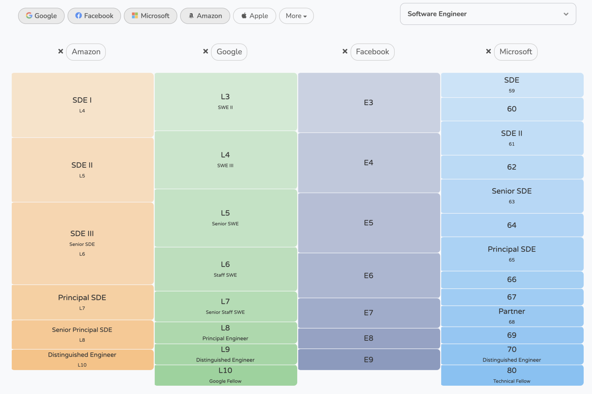

- 00 开篇词 为什么说程序员最适合学财富管理？.md.html
- 01 财富框架：建立属于你自己的财富双塔.md.html
- 02 个人发展：你自己的发展才是最大的财富源泉.md.html
- 03 理财金字塔：如何建立稳固的投资理财结构？.md.html
- 04 实战知识：有哪些收益稳健的经典资产配置组合？.md.html
- 05 支点投资法：主动投资是讲逻辑的！.md.html
- 06 不当韭菜：在财富管理的过程中摆正心态，知己知彼.md.html
- 07 职业方向：如何选择一个有前景的职业方向？.md.html
- 08 职业规划：大公司VS小公司，怎样选择更有前途？.md.html
- 09 期权股权：如何正确处理公司的期权、股权？.md.html
- 10 跳槽涨薪：如何规划一条合理的职业道路？.md.html
- 11 财富拓展：35岁失业？程序员如何拓宽财富渠道？.md.html
- 12 房产投资：如何做出理性的买房决策？.md.html
- 13 实战知识：让我们编程计算下怎么还房贷最合适.md.html
- 14 基金投资：如何让专业人士帮你赚钱？.md.html
- 15 实战知识：如何选出一只优质的基金？.md.html
- 16 股票投资：最适合散户的股票投资方法是什么？.md.html
- 17 投资闭环：如何成为越来越专业的投资者？.md.html
- 18 技术优势：程序员如何用技术超越其他投资者？.md.html
- 19 量化投资：典型的量化投资系统都包含哪些模块？.md.html
- 20 价值投资：永远不过时的中长期投资策略.md.html
- 21 趋势跟踪：怎样跟着趋势一起赚钱？.md.html
- 22 轮动策略：如何踩准市场变换的节奏？.md.html
- 23 对冲思想：这个世界上有稳赚不赔的生意吗？.md.html
- 24 多因子模型：整合不同策略，形成合力的顶层框架.md.html
- 25 机器学习：我们能用机器学习来建立投资模型吗？.md.html
- 26 量化实战：从0到1搭建起一套简单的量化投资系统（上）.md.html
- 27 量化实战：从0到1搭建起一套简单的量化投资系统（下）.md.html
- 番外一 王喆对话李腾：程序员对基金经理的灵魂十问（上）.md.html
- 番外三 有哪些能够持续学习的参考资料和相关网站？.md.html
- 番外二 王喆对话李腾：程序员对基金经理的灵魂十问（下）.md.html
- 番外四 知识总结：这门课的全部思维导图.md.html
- 答疑课堂（一） 财富框架篇、个人发展篇思考题集锦.md.html
- 答疑课堂（二） 投资实战篇、投资进阶篇思考题集锦.md.html
- 结束语 知行合一：财富管理是一生的事情.md.html
- 捐赠
08 职业规划：大公司VS小公司，怎样选择更有前途？
你好，我是王喆。
学完上一讲，你已经知道了如何选择一个有前景的职业方向。在大方向确定好之后，接下来的问题就是如何在这个方向上进行具体的职业发展规划了。
我想你一定听说过很多牛人的“职场升级”故事：工作3年升到P7，5年升到P8，27岁当经理，30岁当总监……当然，我们身边肯定存在着这样的成功人士，但他们的成功只是运气使然呢，还是有什么规律可循？在职业规划这个关乎个人发展的重大问题上，到底有没有什么可行的方法论？怎样在大公司和小公司之间进行选择，才能让我们的职场收益最大化？今天，我们就来一一解决这些问题。
用财富管理的思路去管理你的职业生涯
在解决具体的问题之前，我想先跟你聊一个根本性的问题：我们上班到底是为了什么？
有的同学说了，我上班就是为了挣钱，哪个公司给的钱多，我就去哪。还有的同学说了，我上班就是要发挥更大的影响力，哪个公司出名，能让我影响到更多用户，我就去哪。
他们的回答都没错。《史记》中不也说，“天下熙熙，皆为利来；天下攘攘，皆为利往”吗？作为普通人的我们，上班当然是为名为利，为了养家糊口。但这里我要说的是，名利也分短期利益和长期利益，挣钱也分挣快钱和挣慢钱。
一般来说，我们每个人都要在工作中度过至少20年的时光，因此我们要寻求的应该是整个职业生涯利益的最大化，而不仅仅是最近这一份工作利益的最大化。
用我的老本行，机器学习领域的术语来解释，对于职业生涯，我们要优化的目标函数是n年职业生涯利益的总和，而不是最近一年的职场收益。这样来看，看似棘手的职业规划问题，一下子转换成了一个财富管理的问题。那我们应该怎样管理我们的职场财富，让整个职业生涯的收益最大化呢？
举一个简单的例子。小C是一名刚毕业的985学校硕士生。他可以去一家一线互联网公司做研发，年薪30万；也可以去一家特别缺人的中小型公司的相同岗位，年薪40万。如果你是小C，你会如何选择呢？
如果我们优化的是最近一年的收益，那么毫无疑问，肯定是选择去小公司拿高薪了。但如果我们考虑的是整个职业生涯的收益，大公司的履历就更有价值了。因为在大公司的技术积累本身就是一笔财富，不仅可以产生短期的收入，还能够产生复利。
你可能想问我：职场中的复利是怎么产生的？让我们先回到刚才的例子。假设小C选择了大公司，三年之后，成长为了一名高级工程师，不仅薪水逐年增长，而且积累了可观的技术财富。如果小C此时跳槽到中小公司，已经能做一名独当一面的技术组长了，很有可能拿到60万甚至更高的年薪。这就是职场财富的“复利价值”。
而中小公司的经验就没有这么强的财富效应了。假设小C选择了初始年薪更高的小公司，三年之后同样成为了高级工程师。这时小C如果想要换公司，要么继续横跳到其他中小公司，要么降级去大公司，可能年收入还不如在原来小公司的时候。
当然，这是一个非常简单的例子，包含的变量很少，只是用来说明职场财富管理思路的。事实上，影响一个人职业发展的因素有很多，绝不仅仅是公司的大和小那么简单。下面我就来讲一讲，作为一名程序员，典型的职场发展路径是怎样的。
程序员典型的职场发展路径
图2描绘了程序员在大公司和中小公司的典型发展路径。 总体来看，无论是在大公司还是中小公司，一名初级工程师都要经历长时间的打怪升级，才能到达较高的职位。坚持在技术线发展的同学会成为架构师或者Tech Lead，有管理能力的同学会成为技术经理。
在这里，我们要重点关注的是中小公司和大公司之间的职位对应关系。
先看从中小公司跳槽到大公司的情况。在工作的初级阶段（三年以内），中小公司的工程师还是有可能平级跳槽到大公司的。但是一旦到比较高的技术职位，比如技术专家或者架构师，从小公司到大公司的平级跳槽就基本不可能了。
出现这种现象的原因有两个：一方面是存在着人事管理方面的考虑。因为从中小公司空降到大公司的高级技术人员往往存在不能服众的问题。另一方面，中小公司的技术栈由于用户规模的原因，往往跟大公司有巨大的技术鸿沟，因此中小公司的架构师几乎不可能指导大公司的工程师工作。
中小公司的管理职位面临着同样的问题。如果你处在中小公司的管理岗位，直接跳槽到大公司担任管理职位的可能性非常小。如果希望加入大公司，往往需要重新从技术职位做起。
所以，如果你目前在中小公司，一定要好好考虑下一步的发展问题：是尝试进入大公司，寻求进一步的发展，还是继续在这家公司坚持？
而从大公司跳槽到中小公司，可谓是一马平川。跳槽之后，不仅技术级别会上升，而且有可能直接从高级技术职位转型成经理职位。所以大公司程序员的选择面是远远宽于小公司的。
更重要的是，互联网行业发展到现在，已经形成了一套约定俗成、非常严格的公司职级对应体系。在招聘时，各大公司也有一些不可明说的“target company”范围。所以，如果你希望在互联网这个行业长期发展，最可行也最保险的发展路径是加入大公司或者明星公司，不断积攒你的技术财富。

说到这里，你可能会有一些质疑的想法：谁不知道大公司好呢？可是大公司不好进，升级又难，难道除了在这条路上挤破头，就没有别的办法吗？加入小公司真的一无是处吗？
当然不是。中小公司也有它们特有的优势，因为规模小，发展的潜力大，所以加入发展前景良好的中小公司，就是我推荐的一条弯道超车的发展道路。
跟随公司一起成长是职业发展的快车道
要想避开大公司激烈的竞争、艰难的升级道路，只有一条“快车道”可走：让你所在的中小公司成长为大公司或者明星公司。
虽然互联网的发展在日趋稳定，但是和其他传统行业相比，我们的机会还是多太多了。举个例子，2020年9月，硅谷云数据仓库公司Snowflake上市，在2018年加入的硕士应届生获得的期权价值居然达到了1400万美元。
如果说这些应届生们的经历还存在很大的运气成分，说服力没那么强，那我们不如看下国内新一线公司的崛起过程，这可以更好地说明与公司一同成长的重要性。字节、快手、美团这些公司迅速发展壮大的同时，他们的员工也获得了巨大的成长机会。我在Hulu的众多前同事加入字节、快手之后，不管是股票收益还是带团队的能力，都有了质的飞跃。
我自己的选择也是类似的。2018年，我在看到美国流媒体公司Roku的增长机会后，放弃了一些大公司的offer，加入了Roku的推荐团队。这几年来，随着Roku的快速发展，我不仅在股票收益上获得了10倍的增长，而且所带团队的规模也翻了三倍，负责的业务范围更不是之前可以相比的。
当然，就像我们常说的那样，“富贵险中求”，加入中小公司就意味着较高的风险，但这些风险并不是难以避免的。如果你想尝试加入中小公司，我有三个建议，可以帮助你有效规避潜在的风险：
- 尽量去B轮之后，已经有稳定商业模式的中小公司。如果不是核心创始人，最好不要加入初创公司，成功的概率过低。
- 即使去中小公司，也要寻求不低于业界平均水平的薪资。你要清楚，一个靠谱创业公司的融资额，一定可以支撑起团队较高的薪资水平。如今，砸锅卖铁搞创业的时代已经过去了，如果现在还有公司只卖情怀不给钱，那只能说明这个公司本身就有问题。
- 尽量去细分领域的头部中小公司，这样还可以保持技术上的先进性。有很多细分领域的“隐形独角兽”，其实有着比大公司还先进的技术栈。比如我之前所在的Hulu北京，在视频流媒体领域的技术积累就非常深厚，人员的素质也远超过大公司的平均水平。这样小而美的团队，毫无疑问是值得加入的。
缺啥补啥，高端玩家看重的是职场体验
讲到这里，我想你已经对大公司和小公司的优势有了清晰的认识，对如何选择也有了自己的想法。这里，我结合刚才讲的内容，描绘出了三条我推荐的程序员职业发展道路，希望能给你一些新的思路。
最上面的通道1，我称为“大公司升级打怪”路线，适合名校背景，从小优秀到大的学霸们去尝试。在大公司积累一定的技术财富之后，无论是继续在大公司“升级打怪”，还是去小公司寻求更全面的发展，追求超额的公司发展收益，都是可行的。
中间的通道2，我称为“小公司曲线救国”路线。这条路线适合刚开始由于教育背景等问题，没办法加入大公司的同学。如果你有一个大公司梦，那么不妨先加入相关行业的小公司积攒经验，再寻求合适的时机跳槽到大公司。需要注意的是，如果你选择这条道路，那么就不要在小公司花费过多的时间去升职，因为小公司的职级一般不被大公司完全认可。你更应该做的，是提升自己的能力，把小公司当作一个积攒领域经验的机会就好。
最下面的通道3，我称为“小公司协同成长”路线。这条路线适用于愿意与公司一同发展的同学。如果你认定这家公司是有前景的，是值得你付出的，那么这条路线也许会产生超额的收益。但需要注意的是，选择这条道路的同学一定要时刻关注公司的发展状况，如果发现公司的发展赶不上你的预期，实现不了你当初的目标，那么可以随时切换到通道2，及时止损。
其实，不管是大公司还是小公司，都有自己特有的优势。大公司成熟稳定，有名企光环；小公司发展变化快，有更多的可能性，可能会带来超额收益，还可能让你负责更大的业务。
在职场生涯的前5到10年完成技术积累后，一个成熟的职场人应该把路越走越宽，能够比较自由地选择接下来的道路，补足曾经没有的职场体验。这才是职场“高端玩家”的理想状态。
这些高端玩家们关注的要素不同，所以职场追求也不一样。有些人厌倦了大公司的稳定，想去中小公司负责更大的业务范围；有些人觉得现在公司的技术栈不是业界最先进的，想去另一家公司追求更cool、更先进的技术；有些人觉得现在负责的事情太无聊，想去一家新的公司追求从0到1的成就感；有些人认为现在公司的影响力太小，想去更大的公司，追求更大的业界影响力。
对于这些各种各样的追求，我全都非常赞成和支持。我一直觉得，理想和追求的多样化，才是避免内卷的终极方法。对此，我只有一个提醒：在职业生涯的前5到10年，作为一个初级玩家，你需要做的是踏踏实实地积累自己的技术财富，之后才能在坚实的根基上有更高的、更加理想化的追求。否则，这就不是高端玩家丰富职场体验，而是初级玩家的搏命之旅了。
小结
今天，我讲了程序员进行职业规划的基本思路，分析了大公司和小公司的不同优势，以及如何根据自身的客观情况，去选择适合自己的职业发展路径。这一讲还有四个关键知识点，需要你再温习一下：
- 要用财富管理的思路去管理你的职业生涯，寻求整个职业生涯的利益最大化，而不是最近一份工作的利益最大化。
- 在大公司的技术积累和职场经历是可以产生复利的职场财富。
- 如果说程序员的发展有“捷径”，那么选择一家有前途的中小公司，并和公司一起成长，就是职业发展的快车道。
- 在完成职业生涯前5到10年的技术财富积累后，可以去追求更高端的职场体验，把“业界影响力”“业务范围”“成就感”“技术先进性”作为更高的职场追求。
思考题
选择一个靠谱的、发展前景好的中小公司，其实是非常考验眼力的。你现在是在中小公司吗？你觉得一个好的中小公司，和一个不值得付出的中小公司，分别有哪些特点？
欢迎结合你自己的经历，在留言区谈谈你的想法。我们下一讲见。
© 2019 - 2023 Liangliang Lee. Powered by gin and hexo-theme-book.